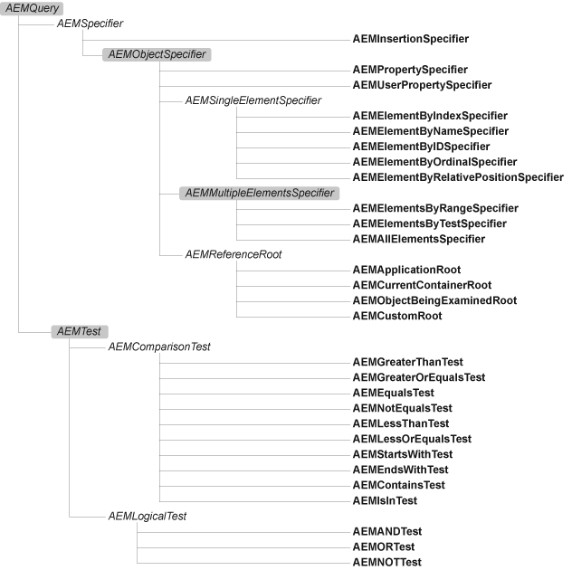

About references
An Apple Event Object Model query (a.k.a. "reference") essentially consists of a linked list made up of one or more Apple event descriptors (AEDescs) of, for the most part, typeObjectSpecifier. Object specifiers are used to identify properties and elements in the application's AEOM. Each object specifer contains four fields:
- want
- four-char-code indicating desired element(s)'s class code (e.g.
'docu'= document), or'prop'if it's a property specifier - from
- an object specifer identifying container object(s)
- form
- four-char-code indicating how the element(s) should be selected (by index [
'indx'], name ['name'], etc.), or'prop'if it's a property specifier - seld
- selector data (e.g. in a by-name specifier, this would be a string)
The Apple Event Manager provides several ways to construct object specifiers and assemble them into a complete reference, but these are all rather verbose and low-level. The aem layer hides all these details behind an object-oriented wrapper that uses chained property and method calls to gather the data needed to create object specifiers and assemble them into linked lists.
For example, consider the reference text of document 1. The code for constructing this reference using NSAppleEventDescriptor would be:
NSAppleEventDescriptor *ref0, *ref1, *ref2;
// Application root:
ref0 = [NSAppleEventDescriptor nullDescriptor];
// Pack 'document 1' element specifier:
ref1 = [NSAppleEventDescriptor recordDescriptor];
[ref1 setDescriptor: [NSAppleEventDescriptor descriptorWithTypeCode: 'docu']
forKeyword: 'want'];
[ref1 setDescriptor: [NSAppleEventDescriptor descriptorWithEnumCode: 'indx']
forKeyword: 'form'];
[ref1 setDescriptor: [NSAppleEventDescriptor descriptorWithInt32: 1]
forKeyword: 'seld'];
[ref1 setDescriptor: ref0 forKeyword: 'from'];
ref1 = [ref2 coerceToDescriptorType: 'obj '];
// Pack 'text' property specifier:
ref2 = [NSAppleEventDescriptor recordDescriptor];
[ref2 setDescriptor: [NSAppleEventDescriptor descriptorWithTypeCode: 'prop']
forKeyword: 'want'];
[ref2 setDescriptor: [NSAppleEventDescriptor descriptorWithEnumCode: 'prop']
forKeyword: 'form'];
[ref2 setDescriptor: [NSAppleEventDescriptor descriptorWithTypeCode: 'ctxt']
forKeyword: 'seld'];
[ref2 setDescriptor: ref1 forKeyword: 'from'];
ref2 = [ref2 coerceToDescriptorType: 'obj '];
NSLog(@"ref2 = %@", ref2);This code works by creating each AEDesc of typeAERecord in turn, populating it, then coercing it to typeObjectSpecifier. Each AEDesc is nested within the next to form a linked list of object specifier records; the last (innermost) descriptor in the finished list indicates the reference's root object in the AEOM (in this case, the application object, which is represented by a null descriptor).
Now, compare the above with the aem equivalent:
id ref = [[[AEMApp elements: 'docu'] at: 1] property: 'ctxt'];As you can see, aem still uses low-level four-character codes to identify the text property and document class, but is otherwise a high-level object-oriented API. Once again, each reference begins with a root object, in this case AEMApp. New aem specifiers are constructed by method calls; each call returning a new specifier object whose own methods can be called, and so on. This allows clients to build up a chain of aem specifier objects that aem can later pack into AEDescs for sending to applications.
One more thing to notice: in aem, specifying a class of elements and indicating which of those elements should be selected are performed by separate method calls, although the information provided will eventually be packed into a single AEDesc of typeObjectSpecifier. This two-step approach makes it easier to integrate aem with the higher-level appscript bridge, which also uses two calls to construct element specifiers (one to specify the element class, e.g. -document, and another to specify the selection, e.g. -at: 1).
Note that [AEMApp elements: 'docu'] is itself a valid reference, identifying all the document elements of the application class. You do not have to call an explicit all selector (indeed, none is provided) as aem automatically handles the details for you. Aem even allows for some convenient shorthand, e.g. writing:
[[[AEMApp elements: 'docu'] byTest: ...] first]is equivalent to writing:
[[[[AEMApp elements: 'docu'] byTest: ...] elements: 'docu'] first]This allows clients to specify the first document that matches the given condition without having to specify the element class a second time. In AppleScript, the equivalent to this is:
first document whose ...which is short for:
first document of (documents whose ...)(Again, this additional behaviour primarily exists to serve the syntactically sugared appscript layer.)
Reference forms
Aem defines a number of classes representing each of the AEOM reference forms. There are nine AEOM reference forms:
- insertion location
- property
- user property
- element by absolute position (index or ordinal)
- element by name
- element by id
- element by relative position
- elements by range
- elements by test
Each of these reference forms is represented by a different aem specifier class, apart from the absolute position form which is represented by three different classes according to the kind of selector used: a numerical index (e.g. 1, -3), a named ordinal identifying a single element (first, middle, last, any), or a named ordinal identifying all elements (all).
The following diagram shows the aem reference class hierarchy (slightly simplified for legibility):

(Concrete classes are shown in bold; highlighted classes implement public methods.)
Clients shouldn't instantiate these classes directly; instead, aem will instantiate them as appropriate when the client calls the methods of other aem reference objects, starting with the AEMApp, AEMCon and AEMIts objects that form the root of all aem references.
In fact, it isn't really necessary to remember the reference class hierarchy at all, only to know which concrete classes implement which methods. All public methods are defined by the four superclasses highlighted above:
AEMQuery- Defines comparison and hashing methods.
AEMObjectSpecifier- Defines methods for identifying properties and all elements, insertion locations, elements by relative position. Also defines comparison and logical test methods for use in constructing its-based references.
AEMMultipleElementsSpecifier- Defines methods for identifying specific elements of a multi-element reference.
AEMTest- Defines logical test methods for use in constructing its-based references.
Abstract base classes
Basic methods
The AEMQuery class defines methods that allow aem references to be compared for equality and used as dictionary keys.
@interface AEMQuery : NSObject
/*
* Base class for all reference form and test clause classes.
*/
-(unsigned)hash;
-(BOOL)isEqual:(id)object;
@end(Defined in base.h.)
Methods for all positional specifiers
@interface AEMObjectSpecifier : AEMSpecifier
/*
* Base class for all property and element reference forms
* (i.e. all reference forms except insertion location).
*/
// Insertion location specifiers:
-(AEMInsertionSpecifier *)beginning;
-(AEMInsertionSpecifier *)end;
-(AEMInsertionSpecifier *)before;
-(AEMInsertionSpecifier *)after;
// Properties and elements:
-(AEMPropertySpecifier *)property:(OSType)propertyCode;
-(AEMUserPropertySpecifier *)userProperty:(NSString *)propertyName;
-(AEMAllElementsSpecifier *)elements:(OSType)classCode;
-(AEMElementByRelativePositionSpecifier *)previous:(OSType)classCode;
-(AEMElementByRelativePositionSpecifier *)next:(OSType)classCode;
// Comparison tests (for use on AEMIts-based references only):
- (AEMGreaterThanTest *)greaterThan: (id)object;
- (AEMGreaterOrEqualsTest *)greaterOrEquals:(id)object;
- (AEMEqualsTest *)equals: (id)object;
- (AEMNotEqualsTest *)notEquals: (id)object;
- (AEMLessThanTest *)lessThan: (id)object;
- (AEMLessOrEqualsTest *)lessOrEquals: (id)object;
- (AEMBeginsWithTest *)beginsWith: (id)object;
- (AEMEndsWithTest *)endsWith: (id)object;
- (AEMContainsTest *)contains: (id)object;
- (AEMIsInTest *)isIn: (id)object;
@end(Defined in specifier.h.)
Methods for all multi-element specifiers
@interface AEMMultipleElementsSpecifier : AEMObjectSpecifier
/*
* Base class for all multi-element reference forms.
*/
// Single element selectors:
-(AEMElementByOrdinalSpecifier *)first;
-(AEMElementByOrdinalSpecifier *)middle;
-(AEMElementByOrdinalSpecifier *)last;
-(AEMElementByOrdinalSpecifier *)any;
- (AEMElementByIndexSpecifier *)at:(int)index;
/*
* convenience shortcut for -byIndex:
*/
- (AEMElementByIndexSpecifier *)byIndex:(id)index;
/*
* index argument is normally an integer (NSNumber),
* although some apps may accept other types (e.g.
* Finder accepts an ASAlias)
*/
- (AEMElementByNameSpecifier *)byName:(NSString *)name;
- (AEMElementByIDSpecifier *)byID:(id)id_;
// Multiple element selectors:
- (AEMElementsByRangeSpecifier *)at:(int)startIndex
to:(int)stopIndex;
/*
* convenience shortcut for -byRange:to:
*/
- (AEMElementsByRangeSpecifier *)byRange:(id)startReference
to:(id)stopReference;
/*
* takes two AEMApp-/AEMCon-based references; other values
* are expanded as needed, e.g. an NSNumber expands to a
* -byIndex: selector; an NSString to a -byName: selector
*/
- (AEMElementsByTestSpecifier *)byTest:(AEMTest *)testReference;
/*
* testReference argument is an AEMIts-based reference
*/
@end(Defined in specifier.h.)
Methods for all test clause classes
@interface AEMTest : AEMQuery
/*
* Represents a comparison/logic test.
*/
- (AEMANDTest *)AND:(id)remainingOperands;
/*
* apply a logical AND test to self and one or more other operands
* takes a single AEMTest instance or an NSArray of AEMTest instances
*/
- (AEMORTest *)OR:(id)remainingOperands;
/*
* apply a logical OR test to self and one or more other operands
* takes a single AEMTest instance or an NSArray of AEMTest instances
*/
- (AEMNOTTest *)NOT;
/*
* apply a logical NOT test to self
*/
@end(Defined in specifier.h.)
Concrete classes
Insertion location reference form
AEMInsertionSpecifier : AEMSpecifier
/*
* refers to insertion point before or after/at
* start or end of element(s); e.g. [ref before]
*/Property reference forms
AEMPropertySpecifier : AEMObjectSpecifier
/*
* refers to a property (whose value may be a basic type, application
* object or reference); e.g. [ref property: 'ctxt']
*/
AEMUserPropertySpecifier : AEMObjectSpecifier
/*
* refers to a user-defined property (typically in an OSA applet);
* e.g. [ref userProperty: @"myVar"]
*/Single element reference forms
AEMElementByIndexSpecifier : AEMSingleElementSpecifierBase
/*
* refers to a single element in the referenced container object(s)
* by index; e.g. [ref at: 3], [ref byIndex: [NSNumber numberWithInt: 3]]
*/
AEMElementByNameSpecifier : AEMSingleElementSpecifierBase
/*
* refers to a single element in the referenced container object(s)
* by name; e.g. [ref byName: @"Documents"]
*/
AEMElementByIDSpecifier : AEMSingleElementSpecifierBase
/*
* refers to a single element in the referenced container object(s)
* by unique id; e.g. [ref byID: [NSNumber numberWithInt: 3456]]
*/
AEMElementByOrdinalSpecifier : AEMSingleElementSpecifierBase
/*
* refers to first, middle, last or any element in the referenced
* container object(s); e.g. [ref first]
*/
AEMElementByRelativePositionSpecifier : AEMSingleElementSpecifierBase
/*
* refers to the previous or next element of the given class in the
* referenced container object(s); e.g. [ref next: 'cpar']
*/Multiple element reference forms
AEMElementsByRangeSpecifier : AEMMultipleElementsSpecifier
/*
* refers to a range of elements in the referenced container object(s),
* including start and end points; e.g. [ref at: 2 to: -1],
* [ref byRange: [[AEMCon elements: 'cpar'] at: 2]
* to: [[AEMCon elements: 'cpar'] last]]
*/
AEMElementsByFilterSpecifier : AEMMultipleElementsSpecifier
/*
* refers to all elements in the referenced container object(s) that
* fulfill a given condition; e.g. [ref byFilter:
* [[AEMIts property: 'pnam'] beginsWith: @"a"]]
*/
AEMAllElementsSpecifier : AEMMultipleElementsSpecifier
/*
* refers to all elements of the given class in the referenced container
* object(s); e.g. [ref elements: 'docu']
*/Tests
The AEMTest class represents a comparison test or logical test, and defines methods for composing additional logical tests on top of these. Each kind of test clause is represented by a different subclass of the main AEMTest class. The details are not that important, however, so they're not listed here.
Reference Roots
AEMApplicationRoot : AEMObjectSpecifier
/*
* the AEMApp macro returns an instance of this class
*/
AEMCurrentContainerRoot : AEMObjectSpecifier
/*
* the AEMCon macro returns an instance of this class
*/
AEMObjectBeingExaminedRoot : AEMObjectSpecifier
/*
* the AEMIts macro returns an instance of this class
*/